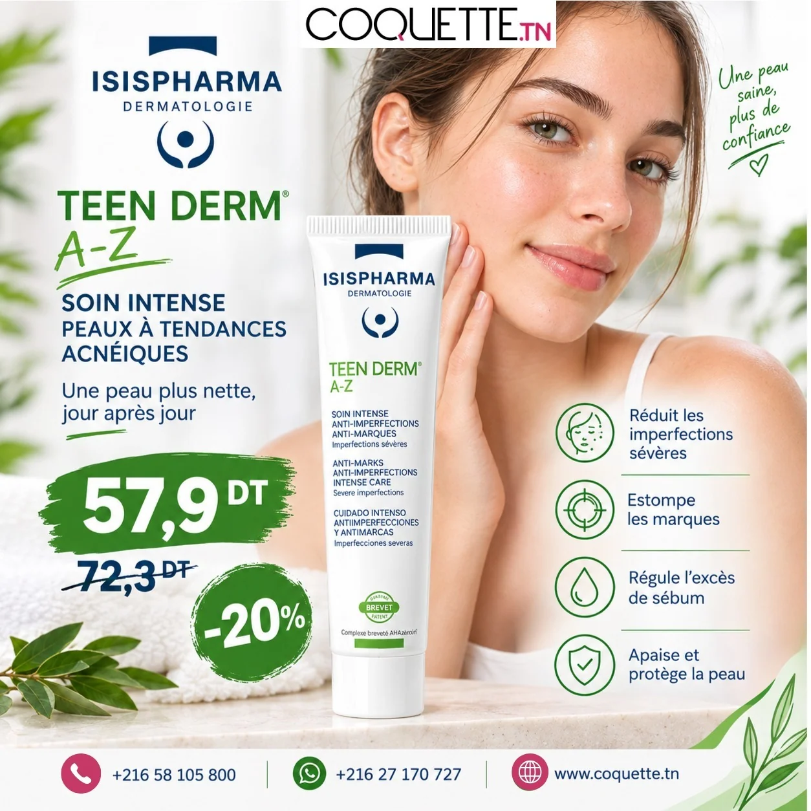

PARAPHARMACIE · SOCIAL MEDIA & DESIGN
Coquette.tn
Des campagnes conçues pour être vues et comprises.
Visuels promotionnels, contenus de conseil et sensibilisation : des formats adaptés à la consultation mobile et à l’identité de la marque.
Mon travail : Création graphique · Adaptation éditoriale